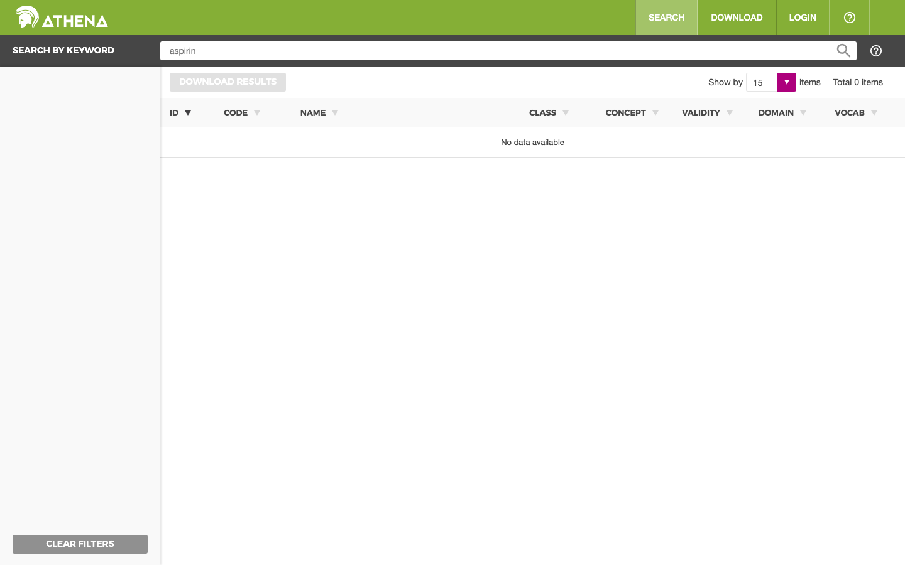
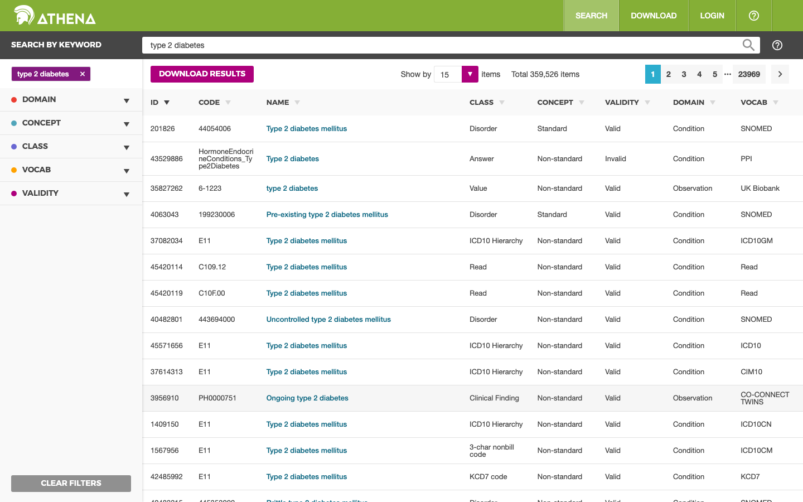
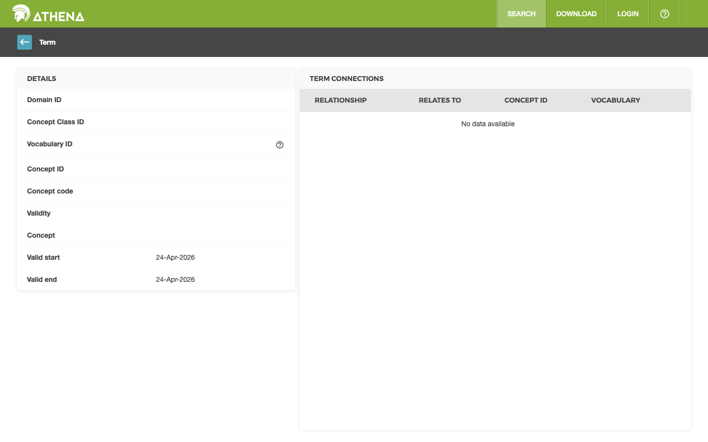

지금은 의료진이 이렇게 매핑하고 있습니다
임상시험 eligibility criteria를 OMOP concept로 매핑하려면 오늘도 많은 의료진이 OHDSI의 공식 용어 브라우저 Athena를 사용합니다. 2016년에 만들어진 이 도구는 AI 매핑이 존재하기 전에 설계되었습니다. 아래는 "제2형 당뇨병" 한 줄을 매핑하는 실제 화면입니다.
빈 검색창 앞에서 시작합니다
프로토콜의 "Type 2 diabetes mellitus" 한 줄을 어떤 키워드로 검색할지 먼저 결정합니다. 영어로? 한글로? 동의어(DM type 2)까지? 약어(T2DM)까지?

시작점이 빈 검색창 하나. 현재 어떤 vocabulary(SNOMED? RxNorm? ICD?)에 어떤 concept가 존재하는지 사전 지식 없이는 감이 오지 않습니다.
검색하면 수백 개의 후보가 쏟아집니다
"type 2 diabetes" 한 번에 359개의 concept가 나옵니다. 이 중 어느 것들을 포함할지 판단해야 합니다.

- 한 번에 하나만 클릭해서 자세히 볼 수 있음 — 나란히 비교 불가
- 결과에 실제 환자 수가 안 나옴 — 연구 데이터에 이 concept가 몇 명 있는지는 별도 쿼리 필요
- "이 중 임상적으로 적절한 것"을 판단할 때 프로토콜 원문 맥락이 옆에 없음 (다른 탭에 있는 PDF를 계속 오가며 확인)
- 판단 결과를 저장할 곳이 없음 — 별도 엑셀에 복사
하나를 클릭하면 상세 정보
concept ID, 도메인, vocabulary 출처, 관계 정보가 나옵니다. 판단에 필요한 자료의 일부입니다.

- 실제 환자 수·분포 — 이 concept가 우리 CDM에 몇 명 있나?
- 동일 기준의 다른 후보들과의 차이 — 358개 중 왜 이것을 선택/제외해야 하나?
- 매핑 이력 — 지난번 연구에선 이 concept를 어떻게 다뤘나?
- AI의 추론 근거 — (AI 매핑을 쓴다 해도) 왜 이걸 추천했는지 맥락
이걸 12~18번 반복해야 합니다
한 연구의 모든 criteria에 대해 이 과정을 반복. 추가로 동의어, 하위 concept, 관련 약물까지 따로 검색하면 실제 소요 시간은 수 시간에서 수 일. 완료해도 매핑이 과도하게 엄격한지·느슨한지를 코호트 생성 단계에 가서야 알 수 있습니다.
- 판단 일관성이 떨어짐 — 1번째 criterion과 10번째 criterion에서 같은 기준을 적용했는지 기억에 의존
- 다른 연구자의 재현 불가 — 어떤 concept를 왜 포함·제외했는지 기록이 엑셀 메모뿐
- Feasibility가 뒤늦게 드러남 — 전부 끝내고 cohort 생성했더니 환자 0명 → 처음부터 다시
이 프로젝트가 바꾸려는 것
AI (Artemis)가 후보 concept를 자동으로 추천하고, concept-viz가 그 추천을 시각적으로 검토할 수 있게 합니다:
- 한 화면에서 여러 후보 동시 비교
- 계층 구조에서 형제·자녀 concept 자동 전개 (빠진 것 즉시 발견)
- concept 선택·교체 시 환자 수 실시간 갱신
- 매핑 이력 자동 기록 (판단 근거와 함께)
개념이 궁금하시면 안내서를, 작동을 보시려면 데모를 여세요.